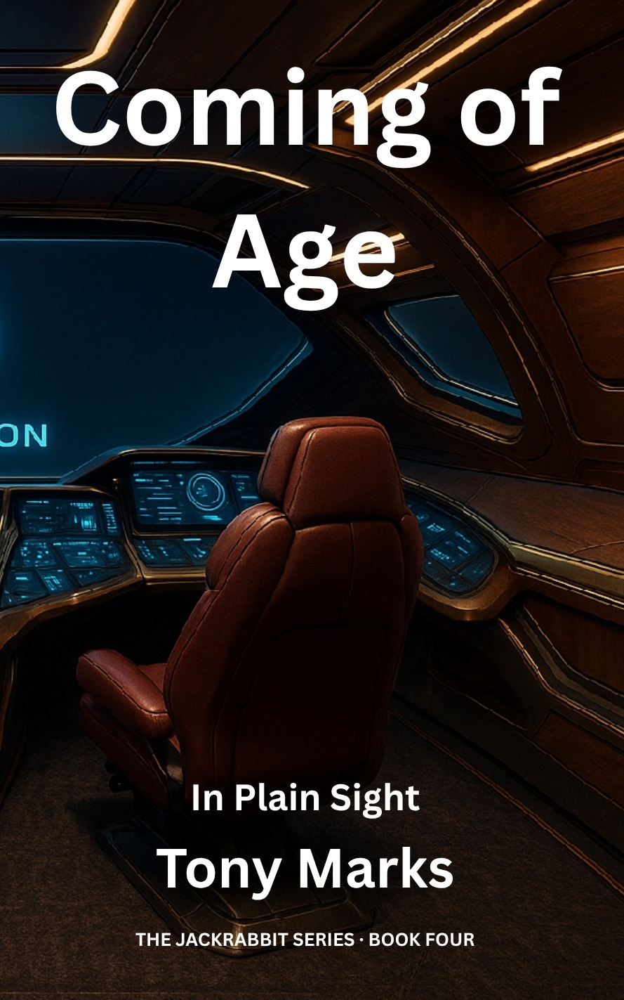

Coming of Age
Book 4 of The Jackrabbit Series

Coming of Age
Book 4 of The Jackrabbit Series
Status: Published
Synopsis
Following the events at the Dyson Array, thirteen-year-old Jack and Aggie follow the trail to Prometheus Station in search of information about Jack's family. Finding the station abandoned and its systems wiped clean, they uncover just enough information to link the Quantum Flux Modulator — a component of the Starling device — to Vectarion Research, a defunct QuantumGrid subsidiary.
Their search leads them to Aletheion Logistics, the courier company that exclusively served Vectarion. Taking a bold approach, Jack applies to work for Aletheion using a masked identity. Accepted as a tier 1 courier, he receives a corporate vessel (legally registered in his name) and begins a years-long infiltration of the corporate system.
As Jack rises through the courier ranks, he forms meaningful relationships — including with his mentor Frank and Frank's granddaughter Amanda, who becomes Jack's romantic interest. Meanwhile, Aggie, who transferred to the superior hardware of the corporate vessel, discovers critical information about the Starling technology but is prevented from sharing it with Jack due to an accidental directive he gave during a moment of stress.
Years pass as Jack climbs to the secret tier 4 of the courier hierarchy. Now almost twenty years old, he faces his greatest moral crisis when assigned a mission that would lead to an attack on the outpost where Amanda and his retired mentor live. Forced to choose between his carefully cultivated position and those he cares about, Jack makes the biggest decision of his life.
In a crucial development, Jack and Aggie create a clone of her consciousness — one version remaining in the corporate vessel to maintain their intelligence network, while the other returns to the original Jackrabbit. Free from the accidental directive in this form, Jackrabbit-Aggie finally reveals the significance of the Starling technology and her years of enforced silence.
The book culminates with Jack orchestrating the evacuation of Amanda's outpost using the Morning Eclipse colony ship before officially completing his final corporate mission.
Key Characters
Jack Abbott
Protagonist
Aggie
Deuteragonist
Administrator Chen
Morning Eclipse Leader
Frank Kowalski
Mentor Courier
Amanda Kowalski
Love Interest
Themes
Setting & Timeframe
"Coming of Age" unfolds over approximately six years, following Jack from (official) age 13 to nearly 20. Beginning at the decommissioned Prometheus Station, the narrative primarily takes place within corporate-controlled space, offering readers their first extended look at life within the megacorporate systems that have previously been portrayed only as distant antagonists.
Key locations include:
- Prometheus Station: An abandoned research facility with connections to Jack's family and the Starling technology.
- Aletheion Courier Hubs: The corporate infrastructure where Jack operates while rising through the courier ranks.
- Nexus-77: A corporate settlement that becomes Jack's emotional anchor point and eventual moral crisis.
- The Original Jackrabbit: Retrieved from storage for Jack's defection and reunion with the Morning Eclipse.
Series Significance
Book 4 represents a dramatic shift in the series, transitioning from Jack's journey of personal discovery and unplanned heroism to a more calculated infiltration of the very corporate system he has been fighting against. The multi-year timespan shows Jack's growth from boy to man while wrestling with the moral compromises required to maintain his cover.
The creation of multiple Aggie instances marks a crucial evolution in her character, allowing her to expand her influence and capabilities. This development sets the stage for the series' exploration of artificial general intelligence as humanity's potential saviour rather than threat.
Most significantly, the book reveals the emergence of "The Jackrabbit" as a cultural symbol of resistance independent of Jack himself — a manifestation of hope that has spread organically throughout human space, elevating Jack from accidental hero to reluctant legend.
Explore the Universe
- Artificial General Intelligence (AGI) — the technology whose replication across hardware platforms makes Aggie's proliferation possible.
- SnapMesh — the galactic communication backbone that multiple Aggie instances begin to inhabit.
- Consortium Data Standards (CDS) — the cryptographic framework Jack must operate within while working as a courier inside the corporate machine.
- The Consortium — the corporate bloc Jack is now infiltrating from the inside.